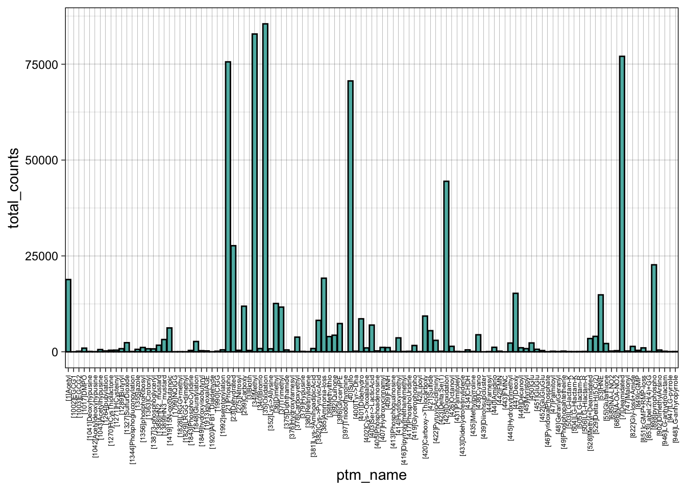
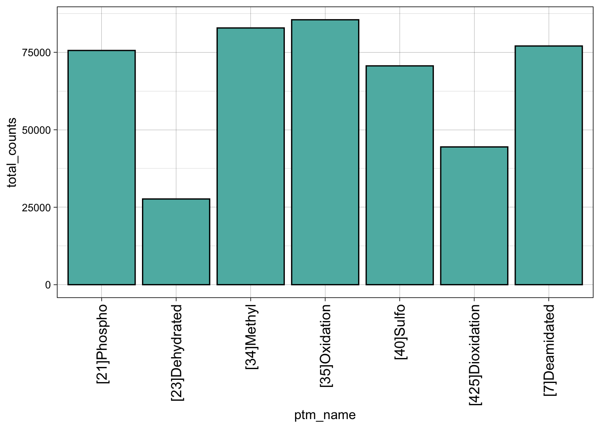
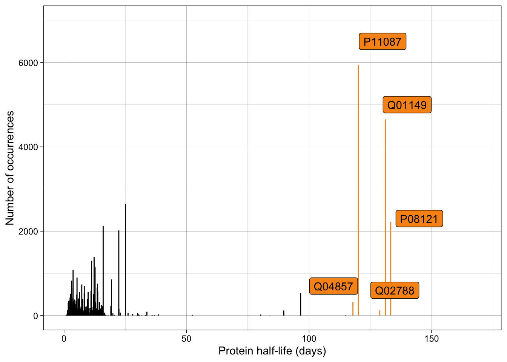

| project_id | Uniprot_entry_name | LeadProt | ptm_loc | ptm_name | ptm_res | ptm_class | total_counts |
|---|---|---|---|---|---|---|---|
| PXD000046 | 1433B_MOUSE | Q9CQV8 | 32 | [472]AEC-MAEC | T | Chemical derivative | 4 |
| PXD000046 | 1433B_MOUSE | Q9CQV8 | 34 | [931]Ethyl+Deamidated | Q | Chemical derivative | 1 |
| PXD000046 | 1433E_MOUSE | P62259 | 33 | [35]Oxidation | M | Artefact | 2 |
| PXD000046 | 1433E_MOUSE | P62259 | 36 | [280]Ethyl | E | Artefact | 1 |
| PXD000046 | 1433E_MOUSE | P62259 | 69 | [24]Propionamide | K | Chemical derivative | 1 |
| PXD000046 | 1433E_MOUSE | P62259 | 69 | [280]Ethyl | K | Multiple | 2 |
MS3
Data retrieval
PTMs
Original data
This is a table of various types of modifications in the dataset:
| ptm_class |
|---|
| Chemical derivative |
| Artefact |
| Multiple |
| Post-translational |
| O-linked glycosylation |
| Co-translational |
| Other glycosylation |
| N-linked glycosylation |
| Pre-translational |
| glyco |
| Synth. pep. protect. gp. |
The exact chemical modification:
| ptm_name |
|---|
| [472]AEC-MAEC |
| [931]Ethyl+Deamidated |
| [35]Oxidation |
| [280]Ethyl |
| [24]Propionamide |
| [36]Dimethyl |
The dimensions of the original database are 2246505, 8
Selecting post-translational modifications
First step is to filter by Post-translational
After filtering out all of the other modifications the final dimensions of the dataframe are 463257, 8
Basic statistics (only for post-translational modifications)
- There are 80 projects that are related to mouse post-translational modifications.
- There are 14028 unique proteins that were investigated.
- There are 115 unique PTMs
Protein half-lives
Protein half-lives were used as a measure of protein turnover rates. There is no overall database with all of the protein half-lives, therefore the data was found in different papers.
The half-lives of mouse proteins were downloaded from the MassIVE repository under the accession number MSV000086426. The specific file used has the name f.MSV000086426/updates/2021-02-12_zrolfs_27ac70a9/other/ResultFiles/AC_Results/AC_ProteinTurnoverResults.tsv. It can be downloaded here.
| UniProtID | mean_half_life |
|---|---|
| Q7TS75 | 262.5558 |
| Q01237 | 235.3647 |
| Q6P9P0 | 215.5984 |
| Q7TSG3 | 133.8122 |
| P08121 | 133.2975 |
| Q01149 | 131.1547 |
Matching protein half-lives and PTMs based on the UniProtID. The entries for which no half lives were found, will be removed. The dimensions before adding half-lives (filtered for post-translational): 463257, 8
| project_id | Uniprot_entry_name | LeadProt | ptm_loc | ptm_name | ptm_res | ptm_class | total_counts | mean_half_life |
|---|---|---|---|---|---|---|---|---|
| PXD000046 | 1433E_MOUSE | P62259 | 156 | [1]Acetyl | S | Post-translational | 1 | 5.063719 |
| PXD000046 | 1433E_MOUSE | P62259 | 157 | [34]Methyl | D | Post-translational | 1 | 5.063719 |
| PXD000046 | 1433E_MOUSE | P62259 | 157 | [39]Methylthio | D | Post-translational | 1 | 5.063719 |
| PXD000046 | 1433G_MOUSE | P61982 | 29 | [36]Dimethyl | N | Post-translational | 68 | 5.720688 |
| PXD000046 | 1433G_MOUSE | P61982 | 29 | [414]Hydroxymethyl | N | Post-translational | 2 | 5.720688 |
| PXD000046 | 1433S_MOUSE | P62259 | 43 | [36]Dimethyl | N | Post-translational | 7 | 5.063719 |
The dimensions after adding half-lives: 199697, 9.
Visualisations
Distribution of types of post-translational modifications

Total counts are the number of times that this modification was detected across all projects. This label is way too small therefore the dataframe was filtered to only include PTMs with a total count above 50,000.

Distribution of protein half-lives
